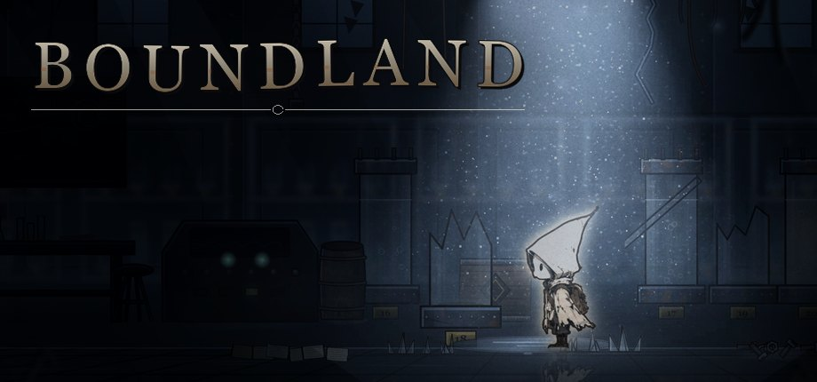

Boundland 2D
El juego. El Sujeto 18 despierta en un laboratorio y recorre once niveles, del frasco al hospital militar. Al empezar hay un prólogo de un minuto (Esc lo salta).
Con todos los niveles abiertos · el idioma también se cambia en Ajustes
A D moverse · Espacio saltar · E usar · clic izq. o J golpear · clic der. o K lanzar · F zorro · Esc pausa